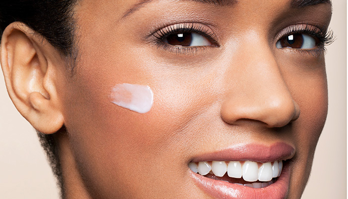
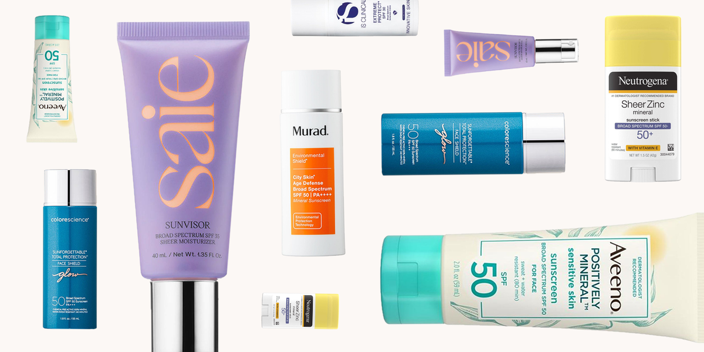
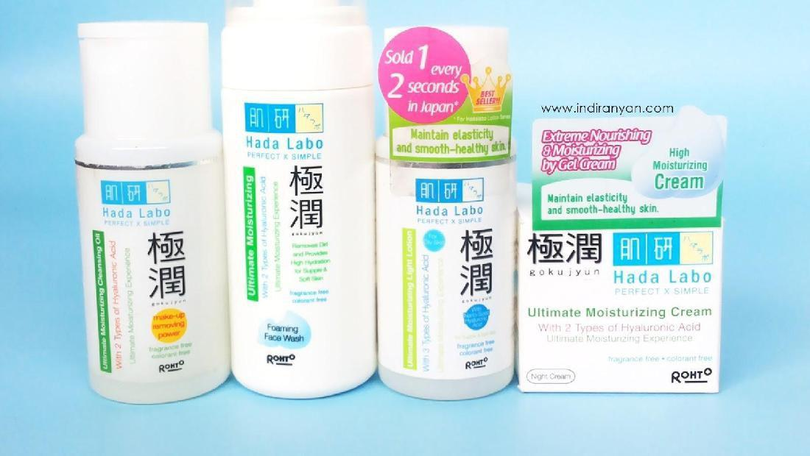
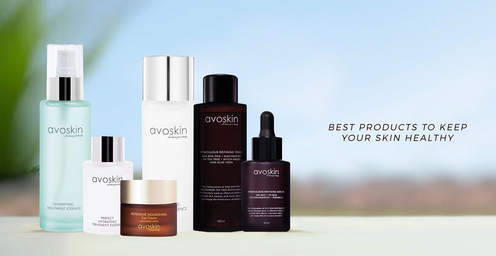
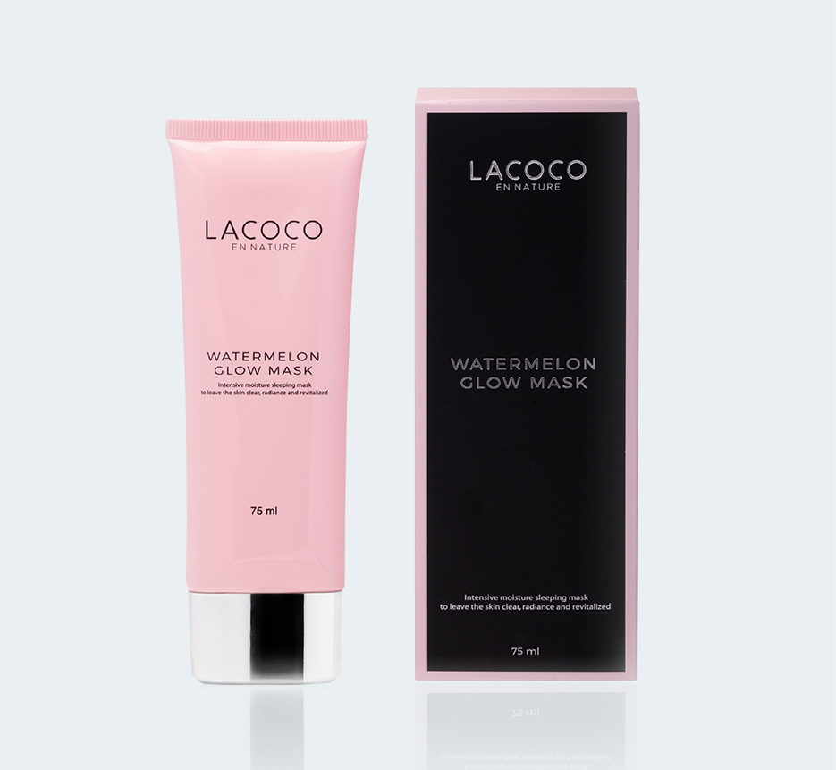
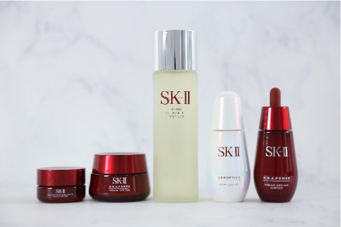
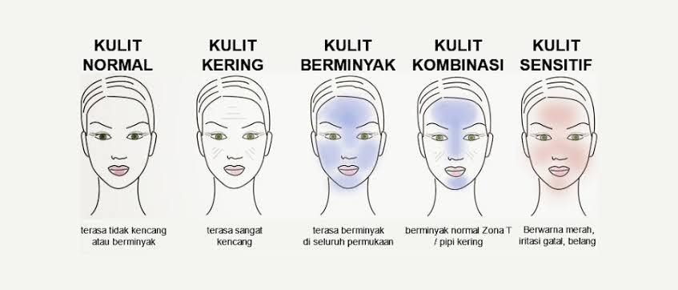

Skincare atau perawatan kulit adalah rangkaian dari berbagai penerapan yang mendukung keadaan integritas kulit, untuk meningkatkan sebuah penampilan dan mengubah kondisi kulit.
Mereka dapat mengandung nutrisi, menghindari dari paparan sinar matahari yang berlebihan dan penggunaan produk kulit emolien yang tepat. Kegiatan yang dapat meningkatkan penampilan
termasuk dalam penggunaan kosmetik, botulinum, pengelupasan kulit, pengisi, pelapisan ulang laser, mikrodermabrasi, pengelupasan kulit, terapi retinol dan perawatan kulit ultrasonik.
Perawatan kulit merupakan tata cara rutin yang dilakukan dalam sehari-hari untuk berbagai situasi, seperti kulit yang terlalu kering atau terlalu lembab, dan pencegahan dermatitis
maupun pencegahan cedera kulit.
Perawatan kulit merupakan bagian dari pengobatan penyembuhan luka, terapi radiasi dan berbagai obat-obatan lainnya. Skincare adalah serangkaian perawatan kulit demi menjaga kesehatan dan
kecantikan kulit. Merawat kulit wajah tidak cukup dari makanan yang kamu konsumsi, namun juga dilakukan dari luar.
Basic Skincare
perawatan kulit dasar
Jika kalian masih pemula, kalian wajib mengetahui apa ajasih basic skincare yang wajib kalian punya?
Oke, langsung kita bahas ya! jadi ada 3 basic skincare, yaitu:
1. Sabun Cuci Muka atau Facial Wash
Facial wash adalah sabun pembersih wajah yang bertujuan untuk memurnikan, melembabkan, dan menenangkan kulit.
Kalau kita perlu membersihkan wajah dari kotoran, debu, bakteri, polusi, dan minyak berlebih.
Jika wajah tidak dibersihkan, maka segala jenis kotoran akan tertinggal di wajah, dan menyebabkan jerawat, kusam, iritasi, dan sebagainya.
Beberapa manfaat facial wash adalah:
Mencegah Iritasi
Menjaga Kesegaran dan Kelembapan Alami Wajah
Mengangkat Kotoran dan Sisa Makeup
2. Pelembab atau Moisturizer

Moisturizer merupakan krim atau lotion yang dapat kamu oleskan ke kulit supaya kulit tidak kering dan jadi lebih sehat terawat.
Ada banyak macam moisturizer, tak hanya untuk kulit kering saja,
tapi ada pula yang untuk kulit berminyak dan ada juga yang cocok untuk semua jenis kulit.
Kamu bisa memilih moisturizer atau pelembab yang cocok untuk kulit. Pemakaiannya takkan membuat kulitmu berminyak,
justru dengan adanya moisturizer ini maka kulit berminyak bisa diatasi. Sehingga takkan menimbulkan beberapa masalah seperti jerawat dan lain-lain
Beberapa manfaat moisturizer adalah:
Menutrisi Kulit
Cegah Penuaan Dini
Mencerahkan dan Meratakan Warna Kulit
Lindungi Dari Sinar UV
3. Sunscreen
 Memakai sunscreen adalah tahapan perawatan paling penting untuk menjaga kesehatan kulit.
Kandungan SPF dan PA dapat melindungi kulit dari paparan sinar matahari yang merusak dan bisa menyebabkan kanker.
Penggunaan sunscreen secara rutin dan benar memiliki banyak manfaat bagi kulit.
Beberapa manfaat sunscreen adalah:
Melindungi dari Sinar UV Berbahaya
Mencegah Penuaan Dini
Menurunkan Resiko Kanker Kulit
Meratakan Warna Kulit
Mencegah Kulit Terbakar (Sunburn)
Mencegah Kulit Menggelap
Meningkatkan Kesehatan Kulit
Melindungi Kulit Walaupun Pake Baju Tertutup
Tips Memilih Sunscreen yang Tepat dan Aman
Memilih skincare tidak bisa sembarangan karena setiap kulit membutuhkan perawatan yang berbeda.
Kandungan produk perawatan kulit tersebut sudah disesuaikan dengan kebutuhan masing-masing kulit. Kulit kering akan berbeda perawatannya dengan kulit berminyak atau kombinasi.
Pengaplikasian yang tepat juga dapat membuat hasil skincare tersebut optimal.
Bagaimana cara memilih skincare yang benar? Berikut ini tips yang disampaikan oleh dr. Medhi.
Membeli Sesuai Jenis Kulit
Ada 6 jenis kulit yang bisa ditemukan di masyarakat yaitu kulit normal, kering, berminyak, kombinasi, dan sensitif.
Sebelum memilih skincare, dr Medhi mengimbau masyarakat untuk memeriksa terlebih dahulu kondisi kulit kepada dokter.
Hal ini perlu dilakukan agar Anda tidak salam dalam menentukan jenis kulit. Jika Anda belum tahu tipe kulit yang
dimiliki akan sulit menentukan skincare yang tepat. Selain itu, dia menambahkan agar masyarakat tidak termakan dengan
iklan yang mengatakan produk kecantikan akan cocok untuk semua jenis kulit.
Pastikan Skincare Sudah Terdaftar BPOM
Anda bisa mengeceknya melalui laman resmi BPOM. Dengan melakukan pengecekan, Anda bisa terhindar dari hal yang tidak diinginkan.
"Banyak produk yang memalsukan izin BPOM. Jadi agar valid Anda bisa langsung cek di website resmi BPOM" ucap dr. Medhi.
Perhatikan Komposisi Produk
Produk kecantikan untuk kulit normal tentu memiliki komposisi bahan yang berbeda dengan skincare untuk perawatan kulit sensitif.
Karenanya, Anda perlu membaca komposisi produk sebelum membelinya. Hal ini penting dilakukan agar terhindar dari reaksi alergi.
Jenis kulit yang tidak memiliki pantangan menurut dr Medhi adalah jenis kulit normal. Jika kulit Anda termasuk jenis kulit berminyak,
sebaiknya menghindari produk yang oily. Disarankan untuk menggunakan gel untuk jenis kulit ini.
"Kalau untuk kulit kering sendiri, hindari penggunaan produk yang mengandung alkohol, dan untuk kulit sensitif hindari produk
yang mengandung alkohol maupun pewangi" tambahnya.
Pilih Produk yang Mengandung Sunscreen atau Sunblock
Iklim di Indonesia termasuk iklim tropis dimana intensitas cahaya matahari cukup banyak. Untuk menghindari efek sinar matahari,
Anda perlu menggunakan skincare yang mengandung sunscreen atau sunblock.
Jangan Termakan Iklan
Banyak produk kecantikan yang menjanjikan hasil yang instan namun berisiko.
Produk skincare yang baik membutuhkan waktu yang cukup lama untuk mempercantik kulit secara alami.
Hasil perawatan tersebut biasanya akan muncul setelah 1-2 bulan pemakaian.
Penggunaan produk kecantikan yang menawarkan hasil instan kemungkinan belum terjamin keamanannya.
Menurut dr Medhi penggunaan skincare perlu konsistensi karena semua membutuhkan proses dan usaha. Karenanya tidak ada produk kecantikan yang hasilnya instan.
Rekomendasi Produk
Hadalabo

Avoskin

Lacoco

SK-II

Membedakan Enam Jenis Kulit

Ada enam jenis tipe kulit yang perlu kamu ketahui
Kulit Berminyak
Indikatornya bisa dilihat setelah mencuci wajah.
Seseorang yang memiliki kulit berminyak, dalam satu atau dua jam wajahnya akan tampak mengkilap,
meskipun tidak menggunakan pelembap terkhusus dibagian dahi, tengah hidung dan dagu.
Kulit Kering
Orang yang memiliki kulit kering akan merasa kulitnya sangat kencang setelah mencuci wajah apalagi
jika tidak memberikan pelembab pada kulit dalam satu atau dua jam.
Kulit Berjerawat
Kulit berjerawat cenderung lebih mudah tersumbat karena minyak yang tebal yang dapat terperangkap
di bawah folikel dan tidak dapat muncul ke permukaan.
Kulit Sensitif
Kulit sensitif biasanya bereaksi terhadap produk perawatan. Seperti, jika tidak cocok akan muncul kemerahan
atau gatal.
Kulit Kombinasi
Kulit kombinasi bisa berupa yang berjerawat dan sensitif pada waktu yang bersamaan atau rawan jerawat dan kering.
Pada kasusnya setiap orang memiliki kombinasi yang berbeda.
Kulit Normal
Kulit yang tidak mengalami segala jenis kulit yang berlebihan. Dengan kata lain, anda tidak akan mengalami
wajah yang terlalu kering, berminyak dan berjerawat.
Kenapa Skincare Penting?
Tentu saja ya skincare sangat penting. Tapi Kenapa ya? mari kita bahas
Menyehatkan Kulit Untuk kamu yang seringkali beraktivitas di luar ruangan selama seharian penuh, penggunaan skincare yang lengkap tidak boleh sampai terlewatkan.
Karena dampak dari sinar UV serta polusi udara yang kotor sangat membahayakan kesehatan kulit kamu. Dengan rutin menggunakan skincare,
kulit akan mendapatkan nutrisi yang cukup sehingga kelembapannya pun tetap terjaga dengan aman.
Mencegah Penuaan DiniSalah satu tujuan memakai skincare adalah untuk memperlambat penuaan dini,
karena semakin bertambah usia, produksi kolagen di dalam kulitmu akan berkurang. Kolagen sangat berperan dalam mempertahankan kekenyalan kulit,
sehingga hal ini bisa memperlambat penuaan dini dengan pemakaian skincare.
Menunda Munculnya Kerutan dan Garis Halus Di saat kamu memasuki usia 20-an dan 30-an, kamu pasti ingin terlihat lebih muda, termasuk dalam urusan kesehatan kulit.
Seiring bertambahnya usia, kulit kamu akan kehilangan kekuatan dan elastisitasnya. Agar tetap kencang, penting untuk meremajakan
kulit dengan menggunakan rangkaian skincare yang tepat sejak dini.
Kamu bisa memperlambat proses penuaan secara signifikan dengan rutinitas perawatan kulit yang tepat.
Menambah Kepercayaan Diri Jika kulitmu sehat dan terawat, maka kamu pun akan tampil lebih percaya diri.
Percaya diri ini sangat penting loh untuk siapa saja. Jika rasa percaya diri kamu meningkat, kamu pun akan lebih leluasa dalam melakukan aktivitas sehari-hari.
Pastinya kamu ingin ‘kan terlihat tampil lebih percaya diri? Yuk, gunakan skincare secara rutin dan teratur.
Mencegah Breakout adikal bebas yang berasal dari polusi, sinar matahari, bahakan asap rokok dapat merusak sel-sel penting dalam tubuh,
termasuk sel kulit kamu. Nah, sel kulit yang tidak sehat akan menimbulkan pigmen kulit yang tidak sehat, kusam, kering dan kulit kasar,
sehingga wajahmu akan lebih mudah breakout.
Meminimalisir Noda Hitam di Wajah Munculnya noda hitam di wajah bisa disebabkan oleh banyak faktor,
salah satunya yaitu karena paparan sinar UV yang terlalu sering. Jika kamu sering beraktivitas keluar rumah, sebaiknya lindungi kulit kamu ya,
khususnya kulit wajah. Perlindungan ini dapat kamu lakukan dengan cara rutin menggunakan suncreen.
Mencerahkan dan Melembabkan Kulit Kehilangan hidrasi di bawah permukaan kulit dapat menyebabkan penurunan ketebalan kulit wajah kamu. Tanpa kelembapan, kulit kamu akan terlihat kusam.